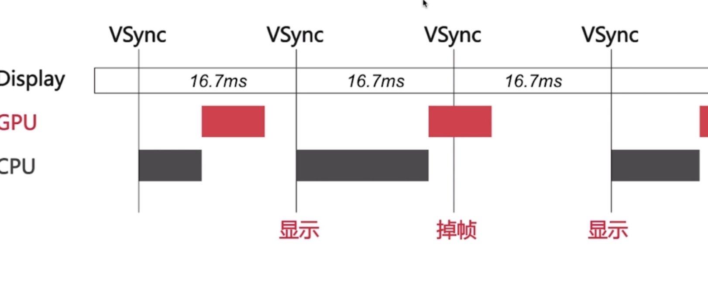

1.5UI卡顿掉帧原因

卡顿原因分析
大体有三种原因： 1.UI渲染需要时间较长，无法按时提交结果。
2.一些需要密集计算的处理放在了主线程中执行，导致主线程被阻塞，无法渲染UI界面。
3.网络请求由于网络状态的问题响应较慢，UI层由于没有模型返回无法渲染。
CPU资源消耗分析
1.对象创建：对象的创建会分配内存、调整属性、甚至还有读取文件等操作，比较消耗CPU资源。尽量采取轻量级对象，尽量放到后台线程处理，尽量推迟对象的创建时间。（如UIView / CALayer）
2.对象调整：frame、bounds、transform及视图层次等属性调整很耗费CPU资源。尽量减少不必要属性的修改，尽量避免调整视图层次、添加和移除视图。
3.布局计算：随着视图数量的增长，Autolayout带来的CPU消耗会呈指数级增长，所以尽量提前算好布局，在需要时一次性调整好对应属性。
4.文本渲染：屏幕上能看到的所有文本内容控件，包括UIWebView，在底层都是通过CoreText排版、绘制为位图显示的。常见的文本控件，其排版与绘制都是在主线程进行的，显示大量文本是，CPU压力很大。对此解决方案唯一就是自定义文本控件，用CoreText对文本异步绘制。（很麻烦，开发成本高）
5.图片解码：当用UIImage或CGImageSource创建图片时，图片数据并不会立刻解码。图片设置到UIImageView或CALayer.contents中去，并且CALayer被提交到GPU前，CGImage中的数据才会得到解码。这一步是发生在主线程的，并且不可避免。SD_WebImage处理方式：在后台线程先把图片绘制到CGBitmapContext中，然后从Bitmap直接创建图片。
6.图像绘制：图像的绘制通常是指用那些以CG开头的方法把图像绘制到画布中，然后从画布创建图片并显示的一个过程。CoreGraphics方法是线程安全的，可以异步绘制，主线程回调。
GPU资源消耗分析
•纹理混合：尽量减少短时间内大量图片的显示，尽可能将多张图片合成一张进行显示。
•视图混合：尽量减少视图层次和数量，并在不透明的视图里标明opaque属性以避免无用的Alpha通道合成。
•图形生成：尽量避免离屏渲染，尽量采用异步绘制，尽量避免使用圆角、阴影、遮罩等属性。必要时用静态图片实现展示效果，也可尝试光栅化缓存复用属性。
Instruments 卡顿监测
Time Profiler ->Call Tree Options :
1.Separete By Thread :按线程划分
2.Invert Call Tree ：逆向调用树，方便查看调用顺序
3.Hide System Libraries：隐藏系统库
Core Animation ->Debug Options :
1.Color Blended Layers :监测图层混合情况，没有混合的部分为绿色，混合最严重的部分是红色，大量图层混合会消耗GPU的时间。
2.Color Copied Images :监测图片颜色格式，如果GPU不支持当前图片的颜色格式，会将其交给CPU预先进行格式转化，并且这张图片被标记为蓝色。（Apple 的 GPU值解析32bit的颜色格式，RGBA)
Color Immediately ：设置调试颜色每帧更新。（一般不用）
Color Compositing-Fast-Path Blue ：对任何直接使用OpenGL绘制的图层高亮。
Flash Updated Regions ：对重绘的内容高亮成黄色。（使用Core Graphics绘制的图层）
Color Hits Green and Misses Red ：光栅化监测，前面已述。
Color Offscreen-Renderded Yellow ：离屏渲染监测，前面已述。
Color Non-Standard Surface Formats：Apple 文档没注解（一般不用）